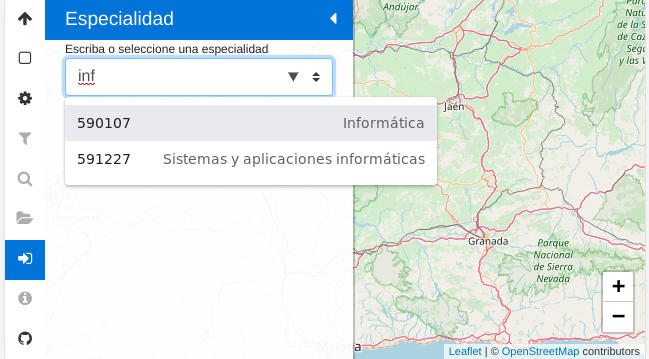
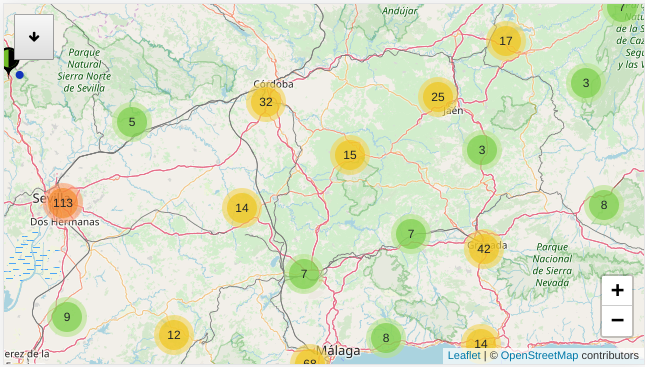
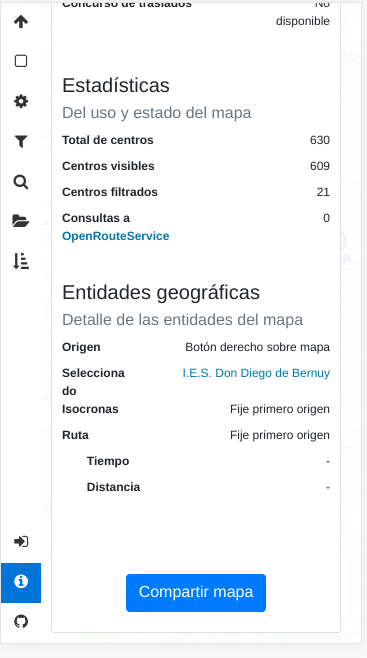
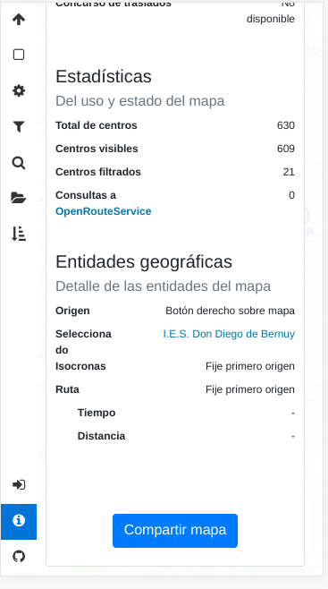
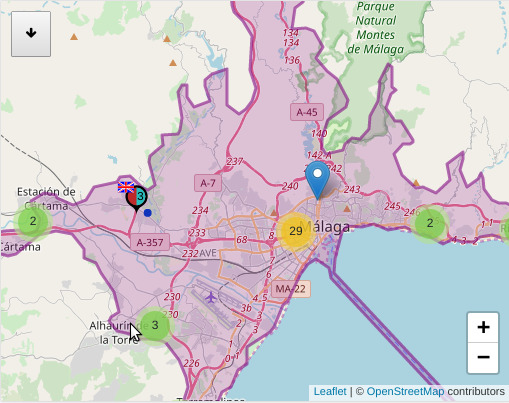
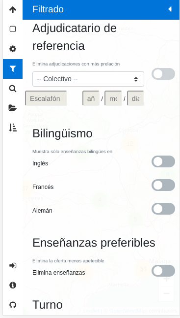

1. ¿Qué es Lobatón?¶
Lobatón es un mapa interactivo que presenta la oferta educativa y las adjudicaciones de destino de todos los centros públicos de Andalucía. En principio, está restringido a los institutos de enseñanza secundaria y a los cuerpos 590 y 591, aunque tal restricción no es técnica, sino debida a la limitación que impone no tener disponibles en la aplicación los datos del resto de centros y cuerpos.
Se caracteriza por:
- Representar cada centro mediante un icono, cuyos detalles visuales dependen de cuáles sean los datos de oferta y adjudicaciones.
- Permitir la aplicación de filtros y correcciones a los datos para eliminar aquellas adjudicaciones, enseñanzas y centros que resulten irrelevantes.
- Reflejar sobre el aspecto de los iconos la aplicación de tales filtros y correcciones.
La aplicación corre enteramente en el navegador cliente.
2. Uso¶
2.1. Arranque¶
Nada más acceder a la aplicación, esta presenta un mapa vacío y nos insta a escoger la especialidad objeto de la consulta:

Nota
Si el mapa no carga datos previos, el navegador nos pedirá permiso para conocer nuestra posición. El dato no es enviado a ningún lugar externo, sino que se toma simplemente para centrar el mapa en la ubicación del usuario. Si rechazamos la petición o no somos rápidos en responder, el mapa se centrará en un lugar más o menos céntrico de Andalucía y con un zoom que permite ver toda la Comunidad en el monitor de un ordenador de sobremesa.
Podemos escoger una especialidad tecleando algunas letras que compongan su nombre:
La selección de una de ellas cargará los datos, los presentará en el mapa y recogerá la barra lateral:
En el mapa aparecerá dos tipos de iconos:
- Los iconos que representa centros individuales como el icono que se deja entrever en la esquina superior derecha de la captura.
- Los iconos que representan agrupaciones de centros y que dejan adivinar cuántos a través del número superpuesto que presentan.
Advertencia
En el mapa no tienen por qué aparecer todos los centros públicos, sino sólo aquellos que tienen enseñanzas relevantes para la especialidad seleccionada. Por ese motivo, si se escoge la especialidad de Matemáticas, aperecerán todos los centros de enseñanza secundaria. En cambio, si se escoge la especilidad de Informática no aparecerán los centros que sólo dispongan de ESO, ya que en la base de datos de la que se obtiene la información, esta especialidad no está relacioanda con la ESO, puesto que lo habitual es que no exista puesto en centros de estas características[1].
Nota
En el caso de dispositivos con un ancho de pantalla muy pequeño, como los teléfonos móviles en posición vertical, el panel lateral ocupa todo el espacio y no podrá verse el mapa hasta que no se repliegue la barra lateral.
2.2. Selección de centro¶
La navegación por el mapa es trivial y semejante a la que se puede practicar en otras herramientas de este estilo[2]. Por su parte, las agrupaciones de centros irán deshaciéndose al acercar el zoom o pulsar sobre los propios iconos.
Si se quiere conocer la información en detalle de un centro basta con pulsar sobre él: el icono aparecerá rodeado con un círculo rojo y se desplegará automáticamente el panel lateral de información de centro:

Si nos fijamos en los iconos de la barra, veremos que aparecerán habilitados ya todos. Los deshabilatos al principio eran aquellos con nula utilidad mientras no hubiera datos cargados.
2.3. Estado el mapa¶
El estado del mapa puede consultarse pinchando sobre el icono de información y presenta información sustanciosa sobre el propio mapa:
- Una primera sección que refiere cuáles son los datos cargados y nos permite conocer si éstos están convenientemente actualizados.
- Una segunda sección de estadísticas con mero carácter informativo.
- Una tercera sección que muestra cuáles son las entidades geográficas que hemos definido definido sobre el mapa y que no da pistas de cuál es la siguiente acción que debemos llevar a cabo para crearlas. A ellas dedicaremos el siguiente epígrafe.
 

El último botón permite copiar en el portapapeles una URL que reproduce automáticamente el estado actual del mapa, lo que nos permite compartir con otros usuarios un estado que nos parezca relevante.
2.4. Entidades geográficas¶
Son las siguientes:
- Centro seleccionado
- Ya descrito anteriormente.
- Origen
La aplicación permite definir un punto de origen que es útil cuando se quieren hacer valoraciones sobre la idoneidad de un centro basándose en la lejanía respecto a un punto de referencia. Para definirlo basta con pulsar con el botón derecho sobre el mapa (o pulsación larga en un dispositivo táctil) y elegir la opción en el menú contextual:

Las dos siguientes entidades sólo tienen sentido si previamente se ha fijado un origen de referencia.
- Ruta
Una ruta establece el camino entre el origen y un centro de destino arbitrario que puede o no coincidir con el seleccionado. Para crearla basta tener definido un origen y, una vez hecho, pinchar con el botón derecho sobre el centro de destino:

La utilidad de la ruta, más allá de mostrar el itinerario, es la de declarar la distancia entre origen y destino y la duración del viaje. Creada la ruta, esa misma información puede obtenerse del panel de información.
- Isocronas
Las isocronas, esto es, líneas de igual tiempo, permiten calcular respecto al origen, todos los puntos geográficos que se encuentran a una misma distancia en espacio o tiempo. La aplicación generá automáticamente las isocronas de 10 a 60 minutos[3] en intervalos de 10 minutos y colorea de distinto color las áreas entre medias. Para crearlas no hay más que pulsar con el botón derecho sobre el origen y seleccionadar la opción oportuna en el menú contextual:

En la captura, la naranja es el área encerrada por la isocrona de 10 minutos, por lo que todos sus puntos se encontrarán a menos de ese tiempo del origen que seleccionamos. Sobre los centros que quedan dentro o fuera de esas áreas no podemos pronunciarnos taxativamente si se encuentran agrupados, ya que al desagregarlos alguno puede viajar a un área continua. Por ejemplo, es probable que alguno de los cuatro centros que aparentemente se encuentran a menos de 20 minutos en la parte inferior caiga en el área siguiente, como efectivamente ocurre:

Si enmbargo, si aplicamos botón derecho sobre cualquiera de las áreas, la aplicación nos brindará la posibilidad de elimianr los centros que queden fuera de la isocronas correspondiente. Si hacemos tal acción sobre el área violácea que representa limitada por la isocrona de 20 minutos:
desaparecerán los centros más allá de esta isocrona y el áreas violácea invadirá toda la superficie hasta el punto de origen. Los centros supervivientes a la acción son los únicos centros que podemos asegurar que se encuentran a menos de 20 minutos. Este filtro es el único que se aplica interactuando directamente con el mapa y no a través del panel correspondiente o el panel de ajustes.
2.5. Ajustes¶
El panel de ajustes permite modificar parte del comportamiento de la aplicación:

El significado de cada opción es el siguiente:
- Filtrar centros sin oferta
- Filtra los centros que se han quedado sin oferta como consecuencia de las correcciones a los datos que se hayan establecido (véase el próximo epígrafe).
- Filtrar centros sin adjudicación
- Filtra los centros que se han quedado sin adjudicaciones como consecuencia de las correcciones a los datos que se hayan establecido (véase el próximo epígrafe).
- Recordar el estado del mapa
- Recuerda el estado del mapa entre sesiones. Esto significa que si cerramos el navegador y volvernos a abrirlo, la aplicación cargará automáticamente los datos, los filtros, las correcciones y presentará el mapa centro en el mismo lugar y con el mismo nivel de zoom. Consecuentemente, la aplicación quedará inicialmente en el mismo estado con que se cerró.
- Ocultar datos filtrados
- Deshabilitada esta opción las enseñanzas y los adjudicaciones filtradas aparecen en la información detallada del centro tachadas y con indicación de cuál es la razón por la que se tacharon. Al habilitarla, tales enseñanzas y adjudicaciones, simplemente, desaparecen.
- Mostrar (en gris) centros filtrados
- Al quedar filtrado un centro, este desaparece del mapa. Si se habilita esta opción, en vez de desaparecer aparecerá dibujado en gris. Se comportan del mismo modo que los centros sin filtrar, salvo por el hecho de que el número de la marca que representa centros agrupados no los tiene en cuenta.
- Incluir vacantes telefónicas
- La base de la información contenida en el mapa es la resolución del procedimiento de colocación de efectivos que se celebra en verano. Al habilitar esta opción, se añaden a la información de los centros las vacantes que siempre aparecen en septiembre, y que no salieron a concurso en julio.
- Corregir con el CGT
- Añade correcciones a las adjudicaciones del procedimiento que generan los resultados del CGT. Algunas de estas correcciones (como postular si un funcionario irá a su destino definitivo o no) son meras especulaciones.
2.6. Filtrado¶
La carga de datos (si no se procede de la recuperación de un estado anterior) presenta todos los centros posibles, todas las enseñanzas y puestos relevantes para la especialidad seleccionada. Lo habitual, sin embargo, es pretender afinar la búsqueda añadiendo correcciones a los datos que van eliminando aquellos que no interesan:
Por defecto, todas las correcciones están deshabilitadas, por lo que aparecerán todos los datos disponibles sobre el mapa.
- Adjudicatario de referencia
Esta corrección permite establecer un adjudicatario de referencia (colectivo por el que participa, escalafón, si procede, y tiempo de servicio) y elimina de los centros todas las adjudicaciones que gozaran de mayor prelación en el procedimiento.
Nota
Recuerde que si quiere hacer desaparecer los centros que queden sin adjudicaciones, deberá ir a ajustes y habilitar la opción correspondiente.
Advertencia
Por un defecto en el diseño de la base de datos, de los funcionarios no interinos, no se almacena el tiempo de servicio, de modo que si no es interino, rellene sólo el escalafón.
- Bilingüismo
- Permite prescindir de las enseñanzas que no son bilingües en los idiomas seleccionados. Esta corrección, además, elimina todos las adjudicaciones a puestos que no sean del perfil bilingüe señalado. Fundamentalmente es útil para interinos que pertenecen a bolsas bilingües.
- Enseñanzas preferibles
Cada especialidad tiene asociadas unas enseñanzas preferibles que son las de Bachillerato para el caso de especialidades predominantemente de secundaria, y las de formación profesional para especialidades predominantemente de formación profesional. Por tanto, habilitar esta corrección para el caso de un profesor de Inglés, significa eliminar las enseñanzas de ESO del mapa y para un profesor de Informática eliminar todas las enseñanzas que no sean los cuatro ciclos formativos de esa familia profesional. Si se acompaña esta correccion con filtrar los centros sin oferta (a través del panel de ajustes), haremos desaparecer los centros que carecen de estas enseñanzas.
Nota
Para eliminar enseñanzas individualmente, existe otra corrección que se tratará más adelante.

- Turno
Permite escoger centro antendiendo al turno de sus enseñanzas:
- El primer ítem permite eliminar enseñanzas de mañana que si se acompaña con el filtro que elimina centros sin oferta (en ajustes), mostrará en pantalla exclusivamente los centros con enseñanzas de tarde relevantes para nuestra especialidad.
- El segundo ítem filtra los centros que tengan alguna enseñanza de tarde, por lo que es útil si no nos interesa correr el riesgo de trabajar en este turno.
Ambos ítem son incompatibles por lo que si se habilita uno se deshabilitara él otro
- Plan de compensación
- Este filtro permite eliminar centros dependiendo de si es un centro com compensatoria, un centro con difícil desempeño o un centro normal.
- Vacantes telefónicas
- Elimina las adjudicaciones que se produjeron en el procedimiento de verano.
- Vacantes iniciales
- Elimina las adjudicaciones que no responden a vacantes iniciales del procedimiento de colocación de efectivos.

- Puestos
- La corrección permite eliminar individualmente las adjudicaciones a los puestos que se marquen. Si algún puesto específico no interesa, es conveniente marcarlo aquí.
- Enseñanzas
- Permite eliminar individualmente enseñanzas que no interesen.
2.7. FAQ¶
Llevo cuarenta minutos pinchando centro a centro en la ciudad de Sevilla y sus alrededores para saber si podría pillar plaza por allí, ¿estoy haciendo el tonto?
Mayúsculamente. Para saberlo de un vistazo basta con lo siguiente:
- En ajustes debe:
- Marcarse «Filtrar centros sin adjudicaciones»
- Cerciorarse de que no está marcado «Mostrar (en gris) centros filtrados».
- Cerciosarse de que no está marcado «Incluir vacantes telefónicas» (porque esas vacantes no se adjudicaron en verano).
- En filtrado:
- Utilice el filtro «Adjudicatario de referencia» poniendo sus propios datos: el colectivo por el que participa y su tiempo de servicio (interino) o escalafón (resto de funcionarios).
Listo. Deberían pervivir en el mapa sólo los centros en que en el pasado procedimiento pudieron adjudicarle puesto.
Nota
También puede probar a poner su tiempo de servicio con un año más. A fin de cuentas, esas son las condiciones con las que partipará este año.
- En ajustes debe:
Mi prioridad es dormir en casa, ¿cómo elimino centros que estén muy lejos?
Usando las isocronas.
Soy interino bilingüe y no me interesan ni las enseñanzas no bilingües ni los puestos de la bolsa normal, ¿tengo forma de eliminar toda la información inútil?
Sí hay forma. Habiendo aprendido latín que, en este caso, habría consistido en:
¿Por qué está deshabilitado el filtro de vacantes telefónicas?
Muy probablemente porque en ajustes no se ha marcado «Incluir vacantes telefónicas*.»
¿Cómo hago para saber las vacantes de septiembre que no se ofertaron en el procedimiento de verano?
¿Por qué en :ref:`ajustes <panel-ajustes>` no puedo incluir las vacantes telefónicas o las correcciones del concurso?
Porque los datos no incorporan información sobre las unas, sobre el otro o sobre ambos. Échele un vistazo al panel de información.
¿Qué fiabilidad tiene esto?
Ninguna: «Rentabilidades pasadas no garantizan rentabilidades futuras». Esto es lo mismo, pero sin apropiarse en el ínterin de dinero alguno.
Pro bono malum.Notas al pie
| [1] | La principal diferencia con otras herramientas como Google Maps es que un doble click derecho sobre el mapa no aleja la vista, sino que apra ello hay que hacer doble click mientras se pulsa la tecla Shift. |
| [2] | El limite de 60 minutos está impuesto por la API de OpenRouteService. |
| [3] | Excepcionalmente, el centro sin oferta apropiada puede aparecer si hubo una adjudicación propia de la especialidad. |